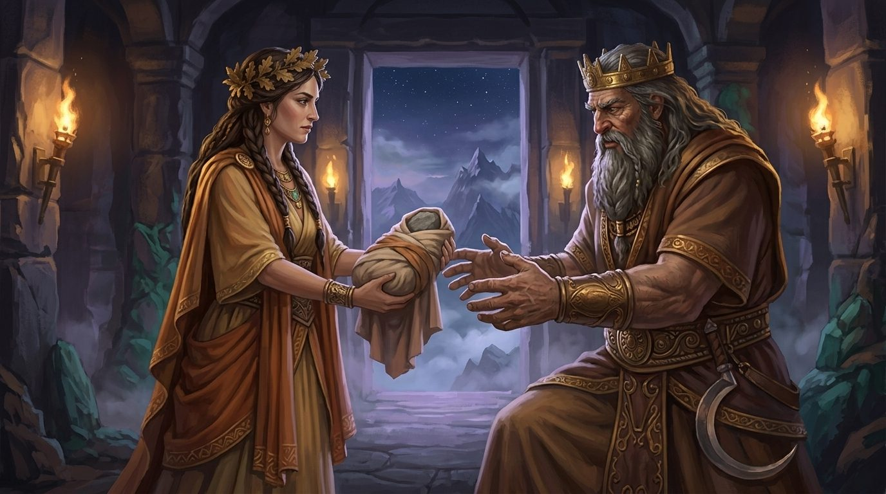
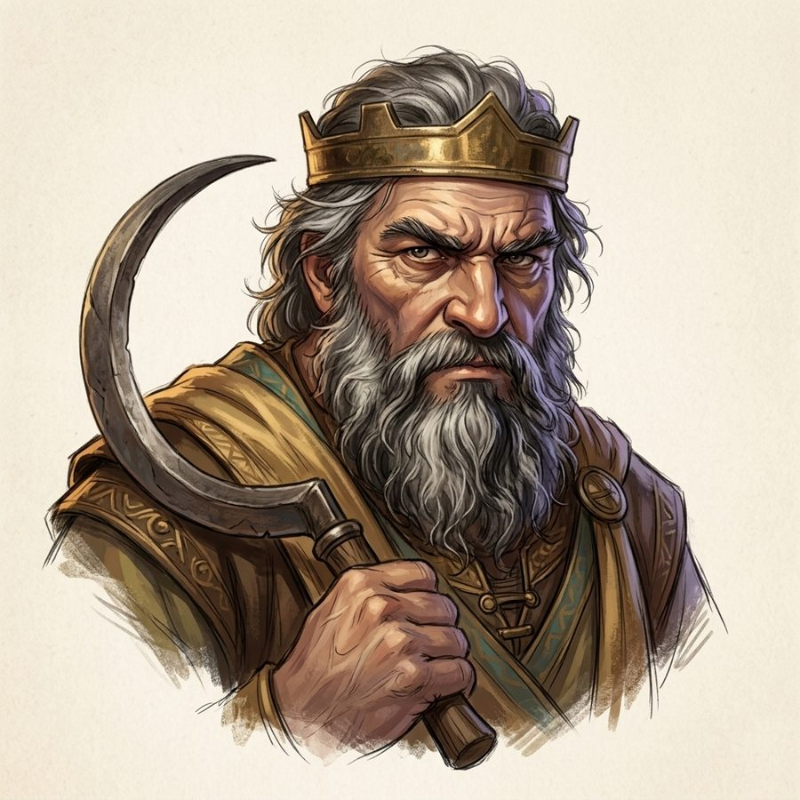
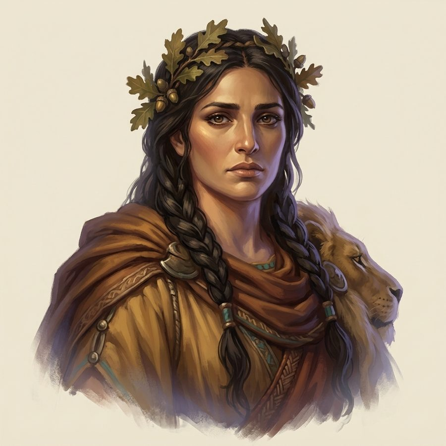
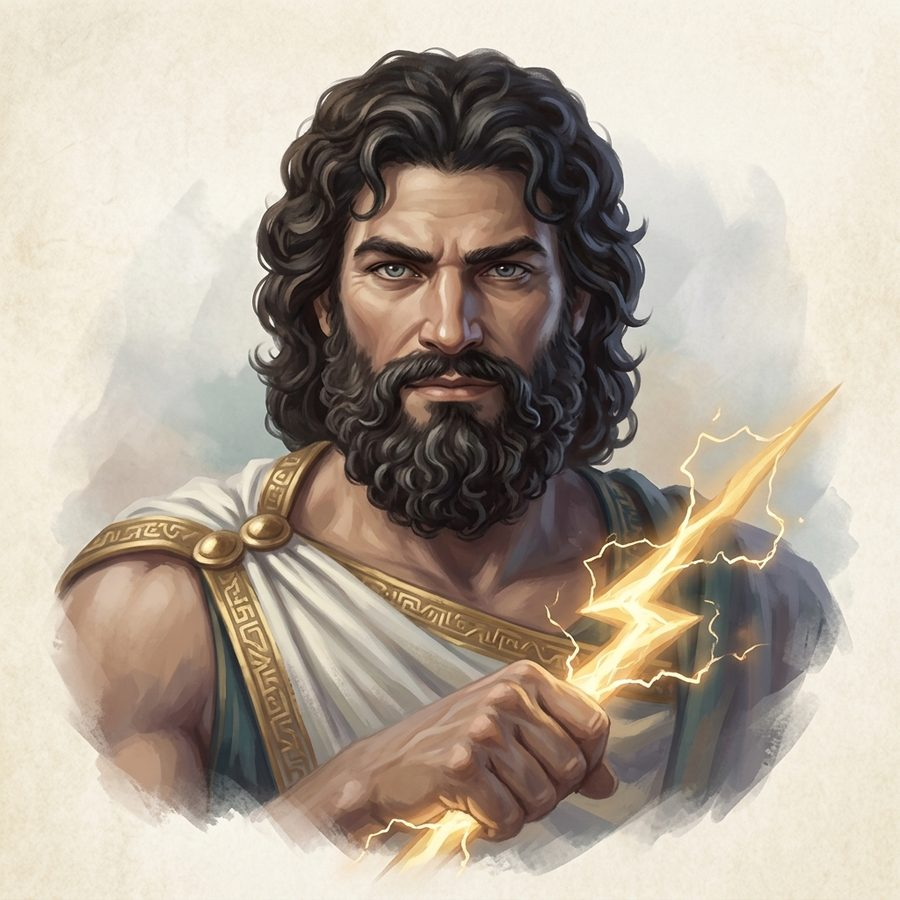
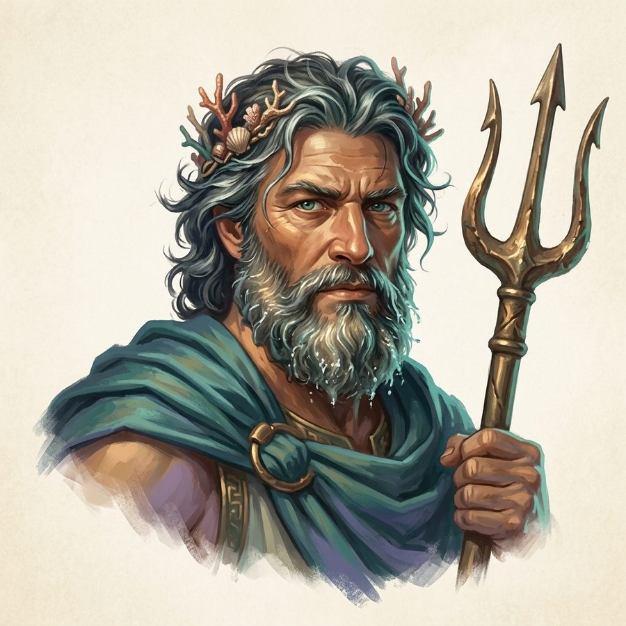
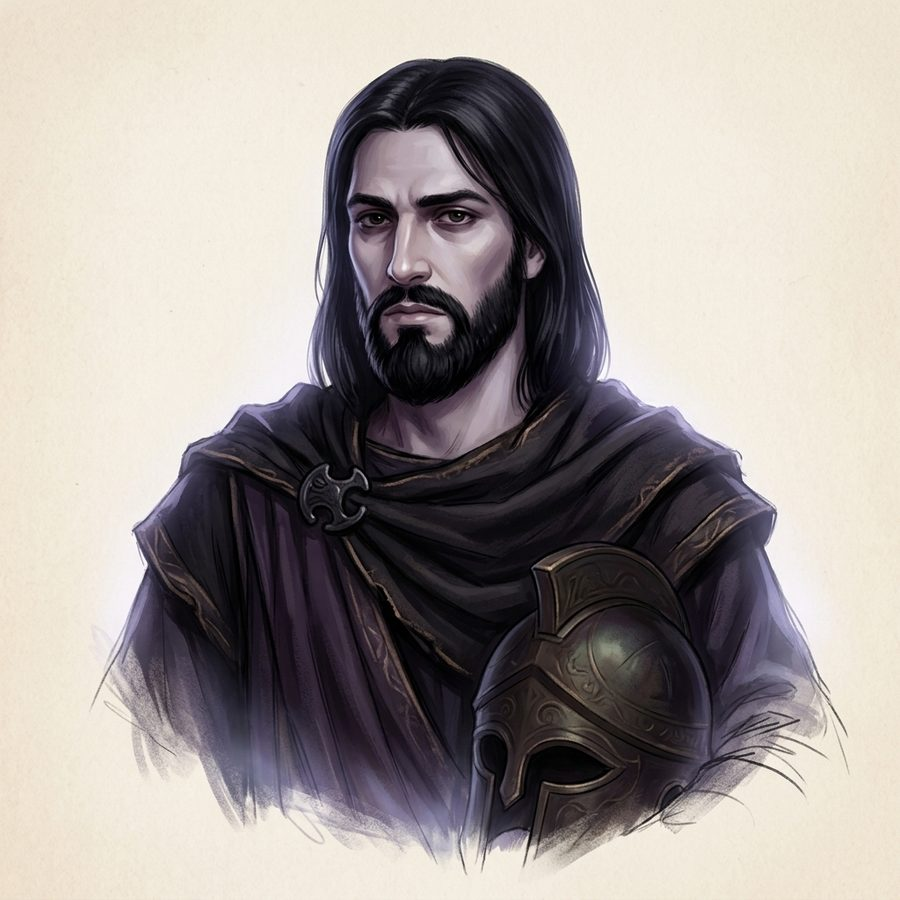

Grieks · · 8 min lezen
De val van Kronos
Hoe Zeus koning van de goden werd

Lang voordat er tempels stonden en mensen offers brachten, toen de wereld nog jong was, heerste Kronos over alles. Hij was de jongste zoon van Gaia, de Aarde, en Ouranos, de Hemel. Zijn eigen vader had hij van de troon gestoten, met een sikkel die zijn moeder voor hem had gesmeed. Sindsdien regeerde hij vanaf de berg Othrys, samen met zijn broers en zussen: de Titanen.
Maar wie zijn vader verraadt, slaapt zelden rustig.

Een voorspelling
Gaia en Ouranos hadden hun zoon iets verteld wat hij nooit meer kon vergeten. Ook hij zou ooit worden overwonnen door zijn eigen zoon. Kronos dacht erover na en kwam tot een even simpele als vreselijke conclusie: als hij geen kinderen had, kon geen kind hem verslaan.
Hij trouwde met zijn zus Rhea. Toen zij haar eerste kind ter wereld bracht, een meisje dat Hestia heette, nam Kronos het uit haar armen en slikte het in zijn geheel door. Het kind stierf niet, want goden sterven niet. Maar het zat gevangen in het donker van zijn buik.
Zo ging het met elk kind dat volgde. Na Hestia kwamen Demeter en Hera, daarna Hades en Poseidon. Vijf keer bracht Rhea een kind ter wereld, en vijf keer stond Kronos al klaar. Hij liet geen moment zijn waakzaamheid varen, schrijft de dichter Hesiodos, en Rhea's verdriet hield nooit op.

Een steen in doeken
Toen Rhea voor de zesde keer zwanger was, ging ze naar haar ouders, Gaia en Ouranos, en smeekte hen om raad. Hoe kon ze dit kind redden? En hoe kon Kronos boeten voor wat hij zijn kinderen had aangedaan?
Gaia wist wat te doen. Ze stuurde Rhea naar het eiland Kreta, naar Lyktos. Daar werd het kind geboren, in het holst van de nacht. Het was een jongen, en hij heette Zeus. Gaia nam hem zelf mee door de zwarte nacht en verborg hem diep in een grot, in een berg vol dichte bossen.
Daarna deed Rhea iets wat veel moed vroeg. Ze nam een grote steen en wikkelde die in luiers en doeken, zoals je een pasgeboren baby inwikkelt. Dat pakketje bracht ze naar Kronos. De koning van de Titanen keek er nauwelijks naar. Hij griste het uit haar handen en slikte het door, net als alle keren daarvoor. Hij had niets in de gaten.
Een kind in de grot
Over de kindertijd van Zeus vertellen latere schrijvers meer dan Hesiodos. Volgens Apollodoros werd hij geboren in een grot op de berg Dikte en werd hij toevertrouwd aan twee nimfen, Adrasteia en Ida. Zij gaven hem de melk van Amaltheia, die in de meeste verhalen een geit is. In andere versies voeden bijen hem met honing.
Buiten de grot stonden de Koureten op wacht: jonge krijgers in volle wapenrusting. Telkens als de baby huilde, sloegen ze met hun speren op hun schilden en dansten ze, zodat Kronos het geluid niet kon horen. Zo groeide Zeus op, ver van zijn vader, in een grot vol geitenmelk en het geroffel van brons op brons.

De afrekening
Toen Zeus volwassen was, kwam het moment. Hoe het precies ging, daarover verschillen de bronnen. Volgens Hesiodos werd Kronos misleid door de listige raad van Gaia. Volgens Apollodoros zocht Zeus hulp bij Metis, een dochter van de oceaangod Okeanos. Haar naam betekent zoiets als 'slim inzicht', en dat had ze. Zij gaf Kronos een drankje te drinken.
Het werkte. Kronos begon te kokhalzen, en het eerste wat eruit kwam was het laatste wat hij had ingeslikt: de steen. Daarna volgden zijn kinderen, een voor een, terug in het licht.
De steen bewaarde Zeus. Hij zette hem vast in de aarde bij Pytho, onder de hellingen van de Parnassos, op de plek die later Delphi zou heten. Het moest een teken zijn voor de mensen, een wonder om naar te kijken. Eeuwen later, in de tweede eeuw na Christus, zag de reiziger Pausanias in Delphi een steen die volgens de mensen daar de steen van Kronos was. Elke dag goot men er olie over.
Tien jaar oorlog
Kronos was overtroefd, maar nog niet verslagen. De Titanen schaarden zich achter hem op de berg Othrys. Zeus en zijn broers en zussen kozen de berg Olympus. Daartussen ontbrandde een oorlog die volgens Hesiodos tien volle jaren duurde, zonder dat een van beide kanten kon winnen. De Grieken noemden hem de Titanomachie: de strijd met de Titanen.
Zeus had hulp nodig, en opnieuw wist Gaia waar hij die kon vinden. Diep onder de aarde, in de Tartaros, lagen wezens gevangen die al lang voor de Titanen waren geboren. Hun vader Ouranos had ze daar weggestopt omdat ze te groot, te sterk en te vreemd waren, en Kronos had ze er laten zitten.
Er waren drie Kyklopen: Brontes, Steropes en Arges. Hun namen betekenen Donder, Bliksem en Felle Gloed. Ze hadden elk één rond oog midden in hun voorhoofd en waren meestersmeden. En er waren drie nog vreemdere broers: Kottos, Briareos en Gyges, de Honderdarmigen. Elk van hen had honderd armen en vijftig hoofden.
Volgens Apollodoros werden ze bewaakt door een monsterlijke cipier, Kampe. Zeus doodde haar en maakte de gevangenen los. De Honderdarmigen gaf hij nectar en ambrozijn, het voedsel van de goden, tot hun kracht terugkeerde. Daarna sprak hij hen toe: vergeet niet wie jullie uit het duister heeft gehaald, en laat nu zien wat jullie kunnen. Kottos antwoordde namens zijn broers dat ze aan zijn kant zouden vechten.
De Kyklopen gaven Zeus wat Gaia lang verborgen had gehouden: de donder, de bliksem en de gloeiende donderkeil. Volgens Apollodoros smeedden ze ook een drietand voor Poseidon en een helm voor Hades. In latere verhalen maakt die helm zijn drager onzichtbaar.
De laatste slag
Wat volgde is een van de grootste veldslagen uit de oude literatuur. Hesiodos beschrijft hoe de zee brulde en de aarde dreunde, hoe de wijde hemel kreunde en de Olympus tot in zijn voet schudde. Zelfs in de Tartaros voelde men het.
Toen hield Zeus zich niet langer in. Hij kwam van de Olympus en wierp bliksem na bliksem. De aarde stond in brand, bossen knetterden in het vuur, de stromen van Okeanos en de zee kookten. Het licht verblindde de Titanen, en een verschrikkelijke hitte drong door tot in de Chaos zelf. Het klonk, schrijft Hesiodos, alsof aarde en hemel op elkaar botsten.
En toen vielen de Honderdarmigen aan. Met hun driehonderd handen wierpen ze driehonderd rotsblokken tegelijk, en nog eens, en nog eens, tot de Titanen onder de stenen bedolven raakten.
De Tartaros
De verslagen Titanen werden in ketens geslagen en diep onder de aarde gegooid. Hoe diep? Hesiodos geeft een beeld dat je niet snel vergeet. Laat je een bronzen aambeeld uit de hemel vallen, dan valt het negen dagen en negen nachten en komt het op de tiende dag op aarde aan. Laat je het dan van de aarde vallen, dan valt het nog eens negen dagen en nachten voordat het de Tartaros bereikt.
Poseidon zette er bronzen poorten voor en er kwam een muur omheen. De Honderdarmigen werden de bewakers, 'trouwe wachters van Zeus'. Eén Titaan kreeg een andere straf: Atlas moest voortaan aan de rand van de wereld de hemel op zijn schouders dragen.
De verdeling van de wereld
Nu moest worden besloten wie wat zou krijgen. De drie broers deden dat niet met een nieuw gevecht, maar door te loten. In de Ilias van Homeros vertelt Poseidon er zelf over. Wij zijn drie broers, zegt hij, zonen van Kronos en Rhea: Zeus, ikzelf, en als derde Hades. Alles werd in drieën gedeeld, en ieder kreeg zijn deel.
Poseidon trok de grijze zee, om er voor altijd te wonen.

Hades trok het nevelige duister: het rijk onder de aarde, waar de doden heen gaan.

En Zeus trok de wijde hemel, tussen lucht en wolken. De aarde en de hoge Olympus bleven van hen alle drie.
Zo was de voorspelling toch uitgekomen. Kronos werd verslagen door zijn eigen zoon, precies zoals hij altijd had gevreesd, en juist omdat hij het zo had gevreesd. Maar ook Zeus zou later een voorspelling te horen krijgen, over een zoon die sterker zou worden dan zijn vader. Dat is een ander verhaal.
Achtergrond
Waar komt dit verhaal vandaan? De kern is de Theogonie van Hesiodos, een gedicht van rond 700 voor Christus over het ontstaan van de wereld en de goden. Het is de oudste samenhangende Griekse versie van deze mythe. Details zoals de Koureten, de geit Amaltheia, het drankje van Metis en de cipier Kampe komen uit de Bibliotheek van Apollodoros, een handboek met mythen uit de eerste of tweede eeuw na Christus. De verdeling met loten staat in boek 15 van Homeros' Ilias.
Waar werd Zeus geboren? Daar waren de Grieken het zelf niet over eens. Hesiodos noemt Lyktos en een berg die hij Aigaion noemt, Apollodoros de berg Dikte, en andere schrijvers de berg Ida. Op Kreta claimden verschillende grotten de eer.
Kronos is niet Chronos. Kronos wordt vaak verward met Chronos, het Griekse woord voor tijd. Die verwarring is al eeuwenoud en verklaart waarom Kronos later werd afgebeeld als Vadertje Tijd met zijn zeis. In de oudste verhalen heeft hij niets met tijd te maken. Zijn sikkel was oorspronkelijk het wapen waarmee hij zijn vader aanviel, en hij werd ook vereerd als god van de oogst. De Romeinen zagen in hem hun eigen Saturnus, en vierden in december het uitbundige feest Saturnalia.
Een ouder patroon. Een hemelgod die wordt onttroond door zijn zoon, die op zijn beurt wordt verslagen door een stormgod: dat patroon zie je ook in oudere verhalen uit het Nabije Oosten, zoals de Hurritisch-Hettitische mythe over Kumarbi. Veel onderzoekers denken dat de Grieken dit soort verhalen via handel en contact hebben leren kennen.
Bronnen
- Hesiodos, Theogonie, regels 453-506 en 617-735, vertaling H.G. Evelyn-White (1914), via Perseus
- Apollodoros, Bibliotheek 1.1.1-1.2.1, vertaling J.G. Frazer (1921), via Perseids
- Homeros, Ilias 15.185-193, vertaling A.T. Murray (1924), via Perseus
- Pausanias, Beschrijving van Griekenland 10.24.6, over de steen in Delphi (aangehaald in Frazers noten bij Apollodoros)
- Titanomachy, Wikipedia